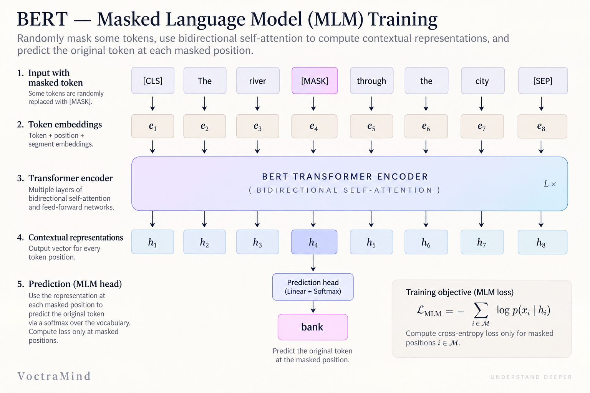
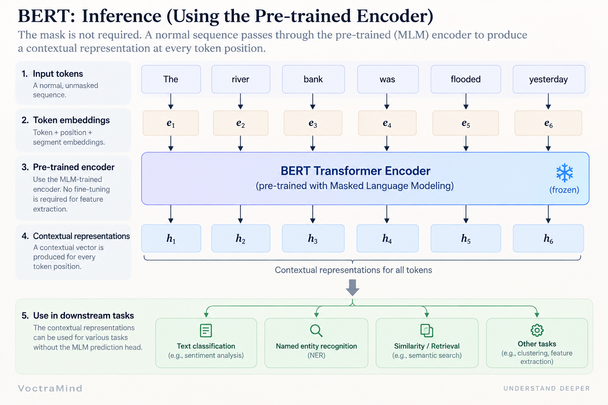

How can a model
learn without labels?
From symbolic words to learned representations — the first steps toward self-supervised learning.
What is self-supervised learning?
Self-supervised learning creates a learning signal from the data itself. Instead of providing a human-written label for every example, the training procedure constructs a prediction target from information already present in the input.
The defining idea is the construction of the learning target — not a particular neural-network architecture.
What can the data teach us about itself?
The answer depends on the task we construct.
Before learning — we need a representation.
A machine-learning model operates on numerical quantities. But a word such as cat is a discrete symbol. We therefore need a numerical representation before a model can process it.
The simplest approach is to give every word its own identity. This leads to one-hot encoding.
One-hot encoding gives a word an identity.
For a vocabulary of size V, each word is represented by a V-dimensional binary vector with a single 1 and zeros elsewhere.
Identity is not similarity.
One-hot vectors tell us which word we have, but they do not learn that cat and dog may occur in similar contexts.
Word2Vec learns representations from context.
Word2Vec changes the objective. Rather than assigning a useful representation to a word in isolation, it learns word vectors while solving a context-prediction task.
Words that occur in related contexts receive pressure to develop related representations. Word2Vec uses two closely related formulations: CBOW and Skip-gram.
Context is used to learn the representation.
But how is that context used? CBOW and Skip-gram answer this in opposite directions.
CBOW — context predicts the target.
Continuous Bag of Words uses surrounding words to predict the center word.
Matrix
context vectors
sat
The context-word embeddings are combined, typically by averaging. Importantly, the same embedding matrix is used for every context position. There is no separate network for the first, second, third, or fourth position.
Skip-gram — the target predicts its context.
Skip-gram reverses the prediction direction. Given a center word, it predicts the words that occur around it within the chosen context window.
Matrix
The same learned parameters are reused across the context examples. Classic Skip-gram also has no explicit positional encoding for the context window.
Same framework. Two prediction directions.
Context → Target
Use surrounding words to predict the center word.
Target → Context
Use the center word to predict surrounding words.
Learned from context — but static at inference.
This distinction is important. Word2Vec uses context during training to learn its word vectors. But after training, looking up a word returns the same learned vector regardless of the sentence in which the word appears.
So Word2Vec is not “context-free” during learning. Rather, its learned word representation is context-independent at inference time. The classic models also do not explicitly represent word order.
What if the representation itself changed with context?
This leads naturally to contextual representations such as ELMo.
ELMo — the representation changes with context.
ELMo, or Embeddings from Language Models, takes the next step. Instead of looking up one fixed vector for a word, it derives the representation from a pretrained bidirectional language model built with LSTMs.
ELMo uses two LSTM language-model directions: one reads the sequence from left to right, while the other reads it from right to left. Their hidden representations provide complementary context for the same word.
Builds its representation from the words to the left of the target.
Builds its representation from the words to the right of the target.
across ELMo layers
ELMo therefore does not assign a new permanent vocabulary vector to every context. Instead, the pretrained LSTM language model produces hidden representations that depend on the sentence, and a learned weighted combination of its layers gives the representation used downstream.
BERT — context through self-attention.
BERT uses a Transformer encoder. Instead of running separate forward and backward language models, self-attention allows each token to interact with information from the sequence, so the representation at a position can incorporate context from both sides.

During Masked Language Modeling, some input tokens are hidden and the model learns to predict the original tokens. The important point is that the Transformer still produces a contextual representation at every position; the representation at the masked position is simply the one used for the reconstruction objective.

ELMo and BERT — same goal, different mechanism.
Both produce context-dependent representations, but they reach that goal through different architectures and pretraining objectives.
Two directional language models
Separate forward and backward LSTM language models provide contextual hidden representations, which are combined through learned layer mixing.
One Transformer encoder
A Transformer encoder uses self-attention (inherently bi-directional) across the sequence, with masked-token prediction providing the main pretraining objective.
ELMo → context-dependent
BERT → context-dependent through self-attention
What happens when we move from text to speech?
The same self-supervised idea reappears in speech, but now the raw signal is continuous and highly redundant